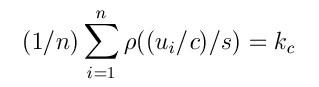
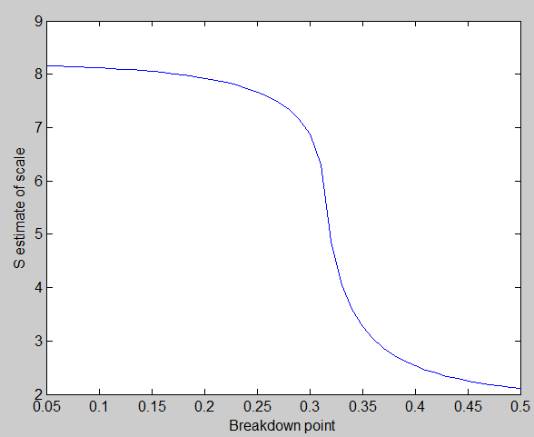

| Flexible Statistics Data Analysis Toolbox™ |
|
S estimator of the scale
sc = minscale(u, c, kc)
sc = minscale(u, c, kc, initialsc)
sc = minscale(u, c, kc, initialsc, tol)
sc = minscale(u, c, kc, initialsc, tol, maxiter)
The M estimate of the scale s must satisfy the following equation

This routine finds the minimum value of s (S estimate of the scale) which satisfies the above equation.
sc = minscale(u, c, kc)) u is a vector of residuals or Mahalanobis distances. c is a tuning constant associated with the required breakdown point (For Tukey biweight ρ, c can be computed by function TBrho). kc is E(\rho)= bdp ρ(c). For Tukey biweight kc = bdp * c2/6. Output sc is the minimum value of the scale. The initial value of the scale is the relative MAD=med|u|/0.6745, the default convergence tolerance is equal to 1e-7 and the maximum number of iterations is set equal to 200.
sc = minscale(u, c, kc, initialsc) In this case it is possible to spply an initial value of the scale.
sc = minscale(u, c, kc, initialsc, tol) In this case it is possible to spply an initial value of the scale and the convergence tolerance.
sc = minscale(u, c, kc, initialsc, tol, maxiter) In this case it is possible to spply an initial value of the scale, the convergence tolerance and the maximum number of iterations
In this example we monitor how the S estimate of the scale changes as a function of the breakdown point.
state1=1;
randn('state', state1);
n=100;
y=randn(n,1);
kk=30;
y(1:kk)=y(1:kk)+16;
u=y-median(y);
% Set breakdown point
bdp=0.5:-0.01:0.05;
sc=[bdp' zeros(length(bdp),1)];
ij=1;
for ibdp=bdp
c=TBbdp(ibdp,1);
kc=ibdp*c^2/6;
sc(ij,2)=minscale(u,c,kc);
ij=ij+1;
end
plot(sc(:,1),sc(:,2))
ylabel('S estimate of scale')
xlabel('Break down point')

|
|
mdrplot.html | mixsim.html |
|